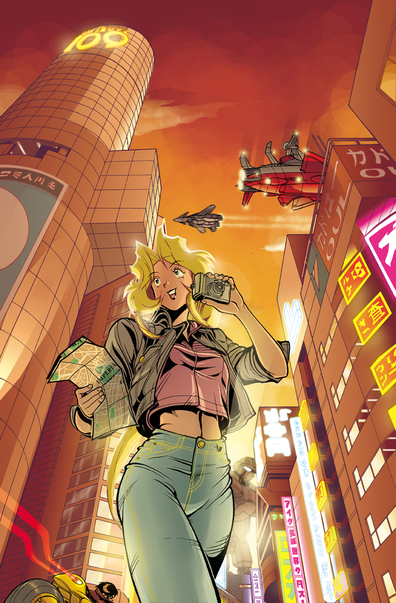
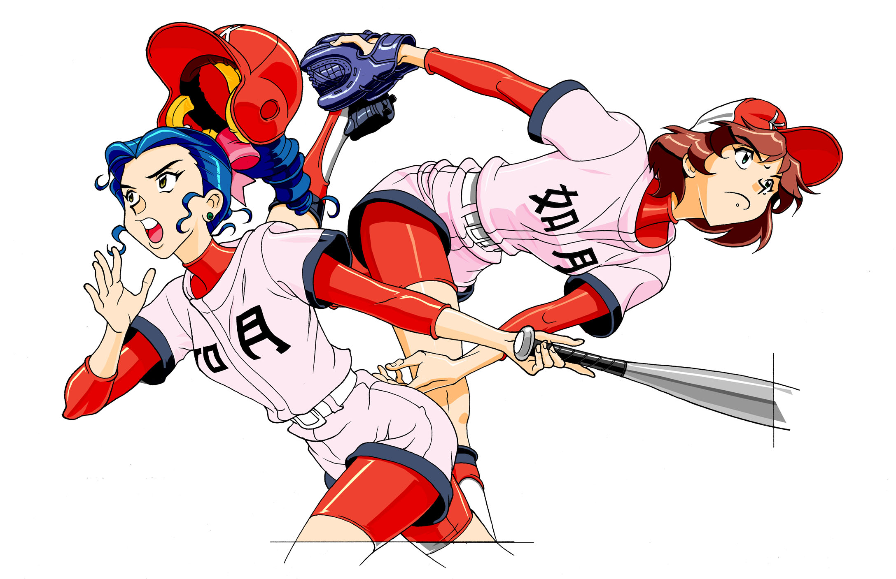
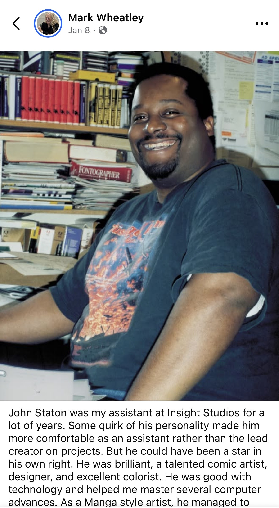

Galleries (14)
See all


A fan-curated celebration of John Staton's world — his art, stories, and enduring legacy.
John Staton spent most of his adult life working in the comic shops of College Park, Maryland. Closet of Comics became Liberty Books became Big Planet became Third Eye Comics, and John was there for most of it, across decades. He also worked for years as an assistant to illustrator Mark Wheatley at Insight Studios, hitting deadlines, catching naps on the studio floor. Wheatley said afterward that he could have been a star on his own. He knew that. He chose otherwise.
At the University of Maryland he drew a strip for The Diamondback. His original creations followed over the years on DeviantArt: DMV, The Streamers, N.E. Boox, The High School Romance. His combat-trained meter maid AJ was in development for years toward a full comic planned for Otakon. Adam Warren wrote Empowered Special #4: Animal Style for him specifically, having followed his mecha work from afar. John delivered 24 color pages and at least forty design sheets. Warren called it above and beyond the call of comics duty. He produced an exclusive variant cover for Jeremy Whitley's Princeless: The Pirate Princess. In October 2016 he drew 31 Star Trek ships on 31 consecutive days, annotating each with the kind of accumulated expertise that takes years to build.
Every piece in this archive includes the original comment threads from DeviantArt, including every reply John left. Read those. He explained the structural parallels between Neon Genesis Evangelion and The Prisoner. He argued Star Trek canon with strangers at midnight. He thanked everyone who stopped by, by name, every time.
His real answer to the question above was Skippy Von Richthofen, a Gold Digger character he loved with a specificity that tells you everything about the kind of fan he was.
John Staton passed away in January 2026. He was a good friend. He is missed.


